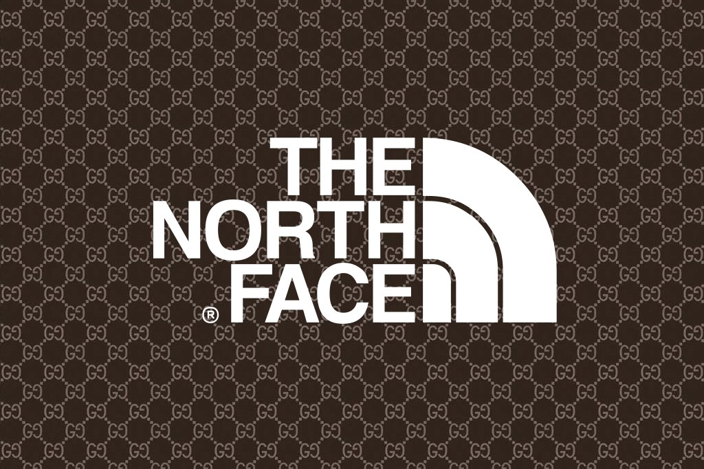

THE NORTH FACE
Colección The North Face x Gucci
Proximamente
The North Face x Gucci incorpora en esta ocasión abrigos y parkas en tonos vivos con tecnología AMK(Advanced Mountain Kit) características de la firma, que posee un avanzado sistema de capas superpuestas resistente a climas extremos.

No pierdas de vista el nuevo capítulo de The North Face x Gucci, el cual brinda estilo y moda para los aventureros más extremos que no pierden el sentido del lujo y el buen vestir en cualquier situación.
Para recibir mas informacion sobre las nuevas colecciones y fechas de lanzamientos ingrese su Email en la casilla.

Indumentaria Hombre
- Cameras
- Remeras
- Pantalones


Indumentaria Mujer
- Cameras
- Remeras
- Pantalones